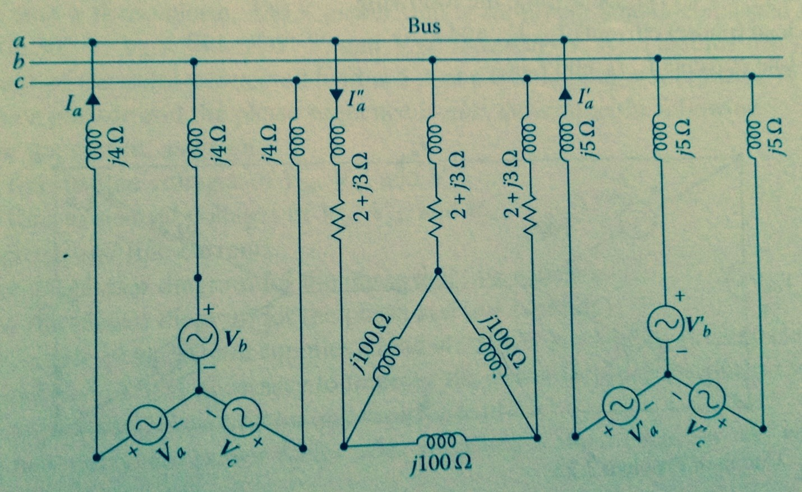

1. A three phase Hz kVA wye-connected synchronous generator has balanced line to line voltages of V at its terminals. If the generators are supplying power to a delta-connected, balanced load of VA at a lagging power factor, determine the following:
2. A three phase, Hz, wye-connected synchronous generator is providing power to two balanced three phase loads. The first load is wye connected and made up of three < Ohm impedances, while the second load is delta connected and made up of three < impedances. Use a phase voltage of Va = < V. Determine the following:
3. Two three phase generators are supplying the same load bus, as shown in the following figure. Both generators produce balanced voltages of abc phase sequence.
Use Va= < V and
Va^' =
< V as the reference voltages for the left and right generators in the figure, respectively. If a balanced three phase
load is connected in the middle of the bus, as shown in the figure:

Generator Va connection to bus:
+ j
Load connection to bus:
+ j
Generator Va' connection to bus:
+ j
Load:
+ j
4. A single phase / V, two winding ideal transformer
has a load of < Ohms connected to its secondary.
If the primary of the transformer is connected to a V line, determine the following:
5. An audio frequency transformer is employed to couple a resistive load to an electronic
source that can be represented by a constant voltage of V in series with an internal resistance
of Ohms. Assume that the transformer is an ideal transformer and determine the following:
6. A VA, / V,
Hz distribution transformer has equivalent resistance and equivalent
reactance both referred to its secondary side, of and Ohms, respectively.
Determine the full load voltage regulation
7.
R1: +j
R2: +j
Transformer Ratio: /
Transformer VA: VA.
R3: +j
I2: < Degrees
Lagging PF(.82) -> Degrees == -acos(.82) == -34.915 degrees
V2:
a. Find the current and voltage at the primary side
b. Find the efficiency
9.
R1: +j
R2: +j
Transformer Ratio: /
Transformer VA: VA.
Rc and Xm: +j
Transformer supplies a load of % of nominal load at a power factor of
V2:
a. Find the current and voltage at the primary side
b. Find the efficiency
8. There is a magnetic circuit with two mutually coupled coils. The self and mutually
inductances of the coils are given as follows:
L11: H
L12: cos(theta) (H)
L22: H
I1: Ampere
I2: Ampere
10. A three phase Hz, hp, wye - connected induction motor operates at a shaft speed of almost rpm at no load and rpm at full load. Determine the following:
11. A three phase, V, hp induction motor is supplied a A at a power factor. It’s stator and rotor copper losses are and W, respectively. Its core losses are W, the friction and windage losses are W, and the stray losses are W. Determine the following:
12. A three phase, pole, hp, V, wye-connected induction motor has the following per phase impedances:
| R | X | |
|---|---|---|
| 1 | ||
| 2 |
13.
A three-phase, 60 Hz, V, delta-connected, cylindrical-rotor synchronous motor has a synchronous reactance of Ohms.
It's armature resistance is negligible. It's combined friction and windage losses or W and its core losses are W.
The motor is connected to a hp mechanical load and is operating at a power factor of .
Find the mechanical load is increased to hp,
a. IL:
b. Ia:
b. Ea:
When the Power is increased:
d. P:
e. E'a:
f. I'a:
g. I'L:
h. PF:
14.
Assume that two three-phase induction motors and a three-phase synchronous motor are connected to the same bus.
The first induction motor is W
and operating at power factor. The second induction motor is W an operating at
power factor. The real power of the synchronous motor is W.
If the bus voltage is volts and the synchronous motor is operating at power factor, determine the following.
a. The total real and reactive power at the bus. :
b. The total bus current and its power factor:
c. If the synchronous motor is operating at power factor, the new total bus current and its power factor:
15.
It is necessary to supply 1000 kW of Hz power. The only power sources available to
operate at Hz. It is decided to generate the power by means of a motor generator set consisting of a
synchronous generator. How many poles should each of the two machines have in order to convert from the first frequency to the second,
assuming the first device has poles.
a. Poles on the second frequency: